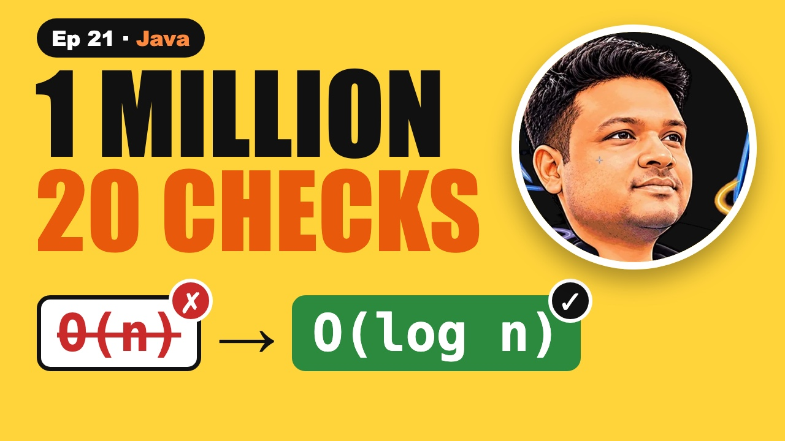

Linear Search vs Binary Search in Java | 20 Checks for 1M

The video goes live on 25 Nov 2026 at 6:00 PM IST. The notes are ready now.
?What this episode covers
Linear search checks every box from left to right. It works on any array, sorted or not, but on a million numbers it can take a million checks. That's O(n).
Binary search only works on sorted data, and it plays the guess-the-number game: look at the middle, throw away the half that can't hold the answer, repeat. A million numbers need about twenty checks. That's O(log n). We walk it through 1, 3, 5, 7, 9, 11, 13 looking for 9 and find it in three checks.
The classic bug is mid = (low + high) / 2. When both are near two billion, the sum overflows int and goes negative. Write low + (high - low) / 2 every time. Unsorted and searching once? Linear search wins, because sorting first costs O(n log n).
◎What you'll be able to do
- Linear search
- Why sorted helps
- Binary search
- Java code + the bug
- Which one when
{ }The Java code from the video
Type it out yourself, or copy it. Each file runs on its own with java FileName.java and prints the examples from the video.
import java.util.*;
// Episode 21: linear search vs binary search. Run: java SearchBasics.java
public class SearchBasics {
// O(n): check every box from left to right. Works on ANY array.
static int linearSearch(int[] a, int x) {
for (int i = 0; i < a.length; i++) {
if (a[i] == x) return i;
}
return -1; // not found
}
// O(log n): halve the range each step. Needs a SORTED array.
static int binarySearch(int[] a, int x) {
int lo = 0, hi = a.length - 1;
while (lo <= hi) {
int mid = lo + (hi - lo) / 2; // safe: (lo + hi) / 2 can overflow
if (a[mid] == x) return mid;
if (a[mid] < x) lo = mid + 1;
else hi = mid - 1;
}
return -1;
}
// Same search, printing every check so you can follow it
static int binarySearchTrace(int[] a, int x) {
int lo = 0, hi = a.length - 1, checks = 0;
while (lo <= hi) {
int mid = lo + (hi - lo) / 2;
checks++;
System.out.println(" check " + checks + ": lo=" + lo + " hi=" + hi + " mid=" + mid + " a[mid]=" + a[mid]);
if (a[mid] == x) return mid;
if (a[mid] < x) lo = mid + 1;
else hi = mid - 1;
}
return -1;
}
public static void main(String[] args) {
int[] unsorted = {4, 8, 2, 9, 5};
System.out.println("linearSearch(" + Arrays.toString(unsorted) + ", 9) → " + linearSearch(unsorted, 9));
System.out.println("linearSearch(" + Arrays.toString(unsorted) + ", 7) → " + linearSearch(unsorted, 7));
int[] sorted = {1, 3, 5, 7, 9, 11, 13};
System.out.println("binarySearch(" + Arrays.toString(sorted) + ", 9):");
System.out.println(" → index " + binarySearchTrace(sorted, 9));
// the overflow bug, made visible
int lo = 2_000_000_000, hi = 2_100_000_000;
System.out.println("(lo + hi) / 2 = " + (lo + hi) / 2 + " ← overflow!");
System.out.println("lo + (hi - lo) / 2 = " + (lo + (hi - lo) / 2));
// how many checks for a million numbers?
int n = 1_000_000;
int[] big = new int[n];
for (int i = 0; i < n; i++) big[i] = 2 * i;
int steps = 0, l = 0, h = n - 1, target = big[n - 1];
while (l <= h) { steps++; int m = l + (h - l) / 2; if (big[m] == target) break; if (big[m] < target) l = m + 1; else h = m - 1; }
System.out.println("1,000,000 sorted numbers: found the last one in " + steps + " checks");
}
}!The mistake to watch for
Writing (low + high) / 2. When both are near 2 billion, the sum overflows int and goes negative.
✦Key moments tap one to jump there
↗Full transcript
Read the whole lesson
You check a million boxes one by one and fail the time limit. But binary search needs just twenty checks. Here's why.
Same array. Same number to find. One way is a million times slower than the other.
By the end of this video you'll write both in Java, and you'll know the one bug that breaks binary search.
Welcome back to Compiled Canvas. This is Episode Twenty One of our DSA series. Last time, we finished strings with the top fifteen string interview questions. Today we start searching.
Here's the plan. First, linear search, the way everyone starts. Then why sorted data changes everything. Then binary search, step by step. Then the Java code, and the bug. And when to use which. A cheat sheet. And an easy quiz at the end.
Let's go.
First, the way everyone starts. It's not wrong. It just doesn't scale.
Linear search checks every box, from left to right, until it finds the number. Looking for nine. Four, no. Eight, no. Two, no.
Nine. Found it, at index three.
If the number is at the end, or not there at all, you check every single box. That's O of n.
The good part? It works on any array. Sorted or not. Keep that in mind, because binary search can't do that.
Here it is in Java. One loop over the array.
If the box holds our number, return its index straight away.
If the loop ends, the number isn't there. Return minus one.
Now the trick. I'm thinking of a number between one and a hundred. You can guess, and I'll say higher or lower. How many guesses do you need?
Always guess the middle. Fifty. Lower. Twenty five. Higher. Thirty seven. Every guess throws away half of what's left.
A hundred, fifty, twenty five, about twelve, six, three, one. Seven guesses, every time.
That's binary search. But it only works because the numbers are in order. On a sorted array, it's the same game.
Let's run it on a real array. One, three, five, seven, nine, eleven, thirteen. Find nine.
Low is index zero, high is index six. The middle is index three, which holds seven. Seven is smaller than nine.
So nine can't be on the left. Throw the left half away. Low moves to four.
The new middle is index five, which holds eleven. Too big. High moves to four.
Now low and high are both four. Index four holds nine. Found, in three checks instead of five.
Look at this graph. Every step halves the array, so a million boxes take about twenty steps. That's O of log n.
Here's binary search in Java. Low starts at zero, high at the last index.
Keep going while low is less than or equal to high. Find the middle.
Found it? Return. Too small? Move low past the middle. Too big? Move high before it.
If low passes high, the number isn't there. Return minus one.
Quick pause, before we go further. If you're finding this video valuable, hit subscribe to Compiled Canvas, and turn on the bell. It's free, it takes one second, and it helps me keep making this complete DSA series for you. Alright, back to it.
Now the bug. It hid in real, widely used code for years. And you might be writing it right now.
Most people write mid equals low plus high, divided by two. It looks fine.
But if low and high are both around two billion, low plus high is bigger than an int can hold. It overflows into a negative number, and your search crashes.
The fix is low plus, high minus low, divided by two. Same middle, and it never overflows.
One line. Write it this way every time, and interviewers notice.
So which one should you use? It depends on one question. Is the array sorted?
Unsorted, and you search once? Linear search. Sorting first would cost O of n log n, which is slower than one pass.
Sorted already, or you'll search many times? Binary search. Sort once, then every search is O of log n.
Your turn. Pause. A sorted array has a thousand numbers. At most how many checks does binary search need?
About ten. Two to the power ten is one thousand and twenty four, so ten halvings are enough.
So, here's the whole thing in one cheat sheet. Pause and screenshot this.
Linear search checks every box: O of n.
Binary search halves the range: O of log n.
Binary search needs a sorted array.
A million boxes take about twenty checks.
Compute mid as low plus, high minus low, over two.
Unsorted and searching once? Use linear.
Okay, quiz time. Three easy questions. Pause the video, think, and then hit play.
Question one. What does binary search need that linear search doesn't?
Question two. About how many checks does binary search need for a million numbers?
Question three. Why write low plus, high minus low, over two?
Ready?
Question one: A sorted array.
Question two: About twenty.
Question three: To stop low plus high from overflowing.
How many did you get right? Tell me in the comments: three out of three, two, or one.
Let's recap. Linear search checks every box. Binary search halves the sorted range. Twenty checks for a million. Use the safe middle formula. Sorted? Binary. Unsorted, once? Linear.
Your homework. Solve LeetCode seven oh four, Binary Search, and LeetCode thirty five, Search Insert Position. Both are easy. Practice problems with hints and Java answers are on compiled canvas dot com. And tell me in the comments: how many checks for two thousand numbers?
Next episode, the binary search masterclass. Lower bound, upper bound, and the first and last copy of any number.
And don't forget to subscribe to Compiled Canvas, so you don't miss anything new in tech and the job market. Keep coding, stay consistent, and I'll see you in the next one.